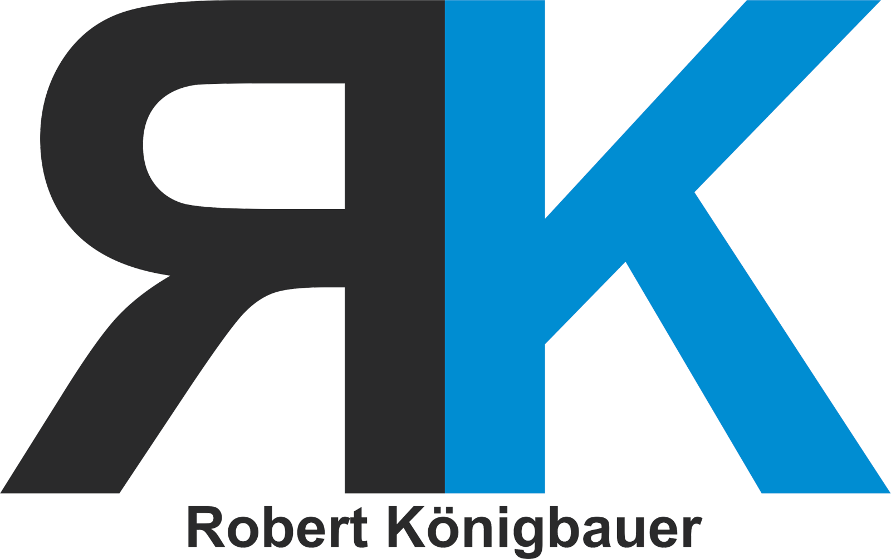

Robert Königbauer
Königbauer Gebäudereinigung (Einzelunternehmen)
Georg-Stegschuster-Straße 18
85375 Neufahrn bei Freising
Telefon: 0172 108 3808
E-Mail: info@koenigbauer-gebaeudereinigung.de
Umsatzsteuer-Identifikationsnummer gemäß § 27a Umsatzsteuergesetz: DE275077767
Berufsbezeichnung: Gebäudereiniger (zulassungsfreies Handwerk, verliehen in der Bundesrepublik Deutschland)
Eingetragen in der Handwerksrolle der Handwerkskammer für München und Oberbayern, Max-Joseph-Straße 4, 80333 München, Betriebsnummer 7089619
Berufsrechtliche Regelungen: Handwerksordnung (HwO), abrufbar unter gesetze-im-internet.de
Wir sind nicht bereit und nicht verpflichtet, an Streitbeilegungsverfahren vor einer Verbraucherschlichtungsstelle teilzunehmen.